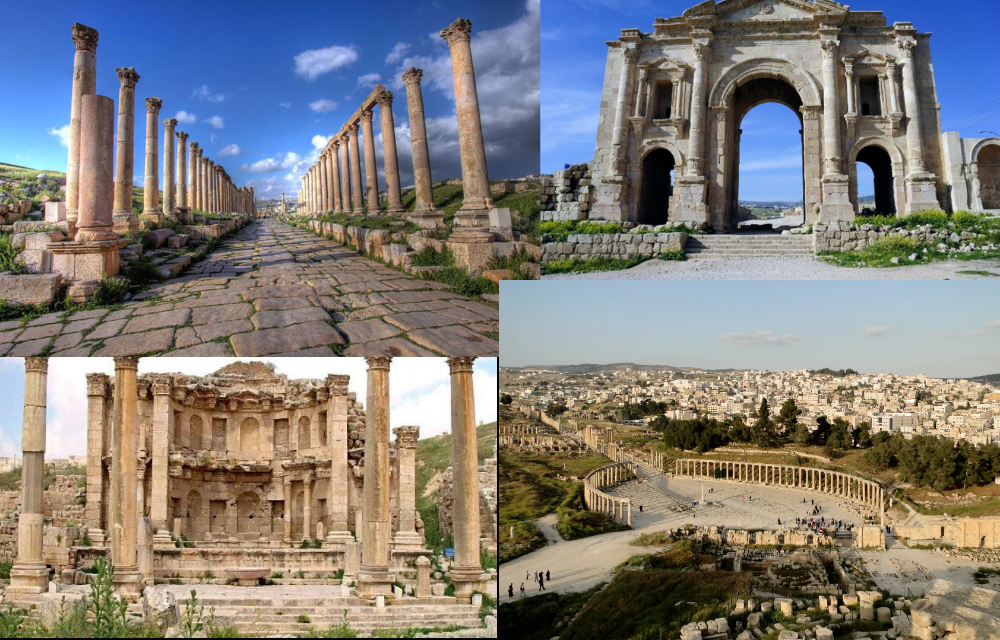

Jordan's Archaeological Landmarks:
 Jordan is distinguished by its rich history of various civilizations; which she lived in and left her traces behind among the desert sands, to allow the tourist a unique experience among its archaeological landmarks, and the following shows the most important archaeological monuments in Jordan:
Jordan is distinguished by its rich history of various civilizations; which she lived in and left her traces behind among the desert sands, to allow the tourist a unique experience among its archaeological landmarks, and the following shows the most important archaeological monuments in Jordan:
The Rose City of Petra:
Petra is located in the Jordanian town of Wadi Musa in the Ma'an Governorate. The history of this city dates back to the third century BC, specifically in the time of the Nabataeans. The city of Petra is an archaeological landmark that includes palaces, temples, tombs, storehouses, and stables carved from sandstone. These ruins run through a rocky crevice called the Siq. Its length is 0.7-mile. The most important landmarks of Petra and its monuments are the treasury built of columns, cavities, and bases in the ancient Greek style, and there are 40 tombs distributed in a street called Facades Street, in addition to a theater consisting of 7,000 seats. Petra is considered a UNESCO World Heritage Site. The ancient city of Petra is located 150 miles south of the capital, Amman, and 75 miles north of the city of Aqaba. It is known as the Rose City; This is because of the color of the rock from which many of the city’s structures were carved, and it is one of the most famous archaeological sites visited by tourists from all over the world. It is one of the greatest tourist attractions in Jordan and its most valuable treasure; It is a global marvel.
Jabal Al-Qalla:
The city of Amman and the Jabal al-Qalaa region witnessed many ancient civilizations; Such as the Roman, Byzantine, Persian, and Greek civilizations. Amman took several names during those civilizations; It was called Philadelphia, then after several names, the Muslims renamed it Amman, and Jabal al-Qalaa is the highest mountain hill in the capital Amman, and it is located in the center of the city, and it can be considered as the best place to enjoy a wonderful view of the entire city. It is a distinctive historical site dating back to the Bronze Age, and it is one of the oldest inhabited places in the world. It was built during the Bronze Ages and was rebuilt during the Iron, Roman, and Byzantine periods, and it extends for more than 1 mile. Castle Mountain also includes many monuments. Other archaeological sites, including the following.
It was called Philadelphia, then after several names, the Muslims renamed it Amman, and Jabal al-Qalaa is the highest mountain hill in the capital Amman, and it is located in the center of the city, and it can be considered as the best place to enjoy a wonderful view of the entire city. It is a distinctive historical site dating back to the Bronze Age, and it is one of the oldest inhabited places in the world. It was built during the Bronze Ages and was rebuilt during the Iron, Roman, and Byzantine periods, and it extends for more than 1 mile. Castle Mountain also includes many monuments. Other archaeological sites, including the following.
Temple of Hercules:
 This ancient temple is one of the most important Roman monuments in the city. It was built during the reign of Emperor Marcus Aurelius (161-80 AD). It should be noted that only two giant columns and some crumbling platforms remain from this temple, which can be seen from all over the world. There is also a huge stone hand in front of the temple, and it contains some handicrafts that adorned the temple in the past.
This ancient temple is one of the most important Roman monuments in the city. It was built during the reign of Emperor Marcus Aurelius (161-80 AD). It should be noted that only two giant columns and some crumbling platforms remain from this temple, which can be seen from all over the world. There is also a huge stone hand in front of the temple, and it contains some handicrafts that adorned the temple in the past.
The Umayyad Palace:
 The Umayyad Palace is one of the most famous landmarks in the citadel. It was built in the eighth century AD. It includes a wide courtyard, a domed hall that is still intact, a huge cistern that provided water for the palace and its surroundings, a Byzantine church, and a gate shaped like a cross.
The Umayyad Palace is one of the most famous landmarks in the citadel. It was built in the eighth century AD. It includes a wide courtyard, a domed hall that is still intact, a huge cistern that provided water for the palace and its surroundings, a Byzantine church, and a gate shaped like a cross.
Jordan Archaeological Museum:
This museum includes a set of artifacts arranged chronologically and a group of statues dating back to the Neolithic era; It is nearly 6000 years old and contains artifacts that represent ancient daily life, such as pottery and flint. In addition to a bronze manuscript from the Dead Sea written in Aramaic characters.
set of artifacts arranged chronologically and a group of statues dating back to the Neolithic era; It is nearly 6000 years old and contains artifacts that represent ancient daily life, such as pottery and flint. In addition to a bronze manuscript from the Dead Sea written in Aramaic characters.
The Ancient City of Jerash:
The ancient city of Jerash away from the Jordanian capital, Amman, about 31 miles to the north, an ancient city representing the largest and most distinguished Roman site in Jordan, which attracts tourists from everywhere in the world, and contains the city of Jerash on the ruins of the city of Graca old Romanian, Surrounded by mountains and green valleys, It includes some distinctive landmarks, such as Hadrian's Arch, the Temple of Artemis, and the wide oval forum surrounded by columns, and the following shows a brief description of these and other landmarks in Jerash.
Hadrian's Arch or the South Gate:
Hadrian's Arch, known as the Arch of Triumph, is located in the far south of the ancient city. It was built in 129 AD in honor of Emperor Hadrian who visited the city. It is one of four gates that were distributed along the city wall, which leads to the city itself. And behind it is the hippodrome, which can accommodate more than 15,000 spectators to watch the races at that time.
Temple of Zeus and Southern Theatre:
Zeus temple is the remains of an elegant ancient temple that was built in 162 AD. The Southern Theatre can accommodate approximately 5,000 spectators and was built in the first century AD with a unique acoustic system.
| Zeus Temple | Southern Thearte |
The Oval Forum or the Nadwa Square:
It is one of the most distinguished sites in Jerash. Because of its strange shape and large size, it is a plaza made of cobbled limestone, surrounded by 56 Ionic columns, linking the Street of Columns and the Temple of Zeus.
The Street of Columns:
It is located to the northeast of the forum, which is the main road to the ancient city. Its length is approximately 800 meters and extends to reach the northern gate of the city. It still preserves its original stones interspersed with the wheels of the vehicles that were traveling on it at that time.
Al-Aqaba:
The city of Aqaba, or as it was referred to in old Islamic history as the city of Ayla, is situated on the shore of the Red Sea in the far southern piece of Jordan. It is around 205 miles from the Jordanian capital, Amman. is the main port and source for Jordan on the Red Sea, and it was considered in the past as a significant port for exchange to the Far East, and it is visited by enormous quantities of tourists from inside and outside Jordan. The city of Aqaba permits its guests to rehearse a wide range of exercises ashore and ocean such, as partaking in the magnificent environment, the shocking perspective on the Red Sea, watching coral reef, rich marine life, and visiting different archeological destinations. on the planet, and a visit to its gallery, which shows the recorded relics of the Aqaba district, including stoneware and old coins. With respect to the water exercises, they are different, including water skiing, swimming, jumping, and drifting.
Dead Sea:
The Dead Sea is regarded as the lowest place on the planet,  and its waters have a very high salinity rate, allowing objects to float freely on its surface. Every year, a great number of people visit the Dead Sea to enjoy its blue-green waters. as well as the advantage of clay-rich minerals favorable to health, which is utilized for different medicinal and cosmetic reasons, as well as recreation in beach resorts along its coast. Its level drops by around a meter every year, and it is expected to dry out within forty years.
and its waters have a very high salinity rate, allowing objects to float freely on its surface. Every year, a great number of people visit the Dead Sea to enjoy its blue-green waters. as well as the advantage of clay-rich minerals favorable to health, which is utilized for different medicinal and cosmetic reasons, as well as recreation in beach resorts along its coast. Its level drops by around a meter every year, and it is expected to dry out within forty years.
Ma'in:
The Hashemite Kingdom of Jordan is regarded as one of the most forward-thinking nations in the field of medical tourism, owing to Jordan's abundance of natural and medicinal resources, which include mineral-rich rivers, hot waterfalls, and volcanic mud. Ma'in, which contains 63 springs, and the temperatures  vary between these springs, but they are similar in chemical properties, as they contain important elements such as sodium, chloride, hydrogen, calcium, radon, and sulfide gas in addition to carbon dioxide, and the water temperature in some springs reaches approximately 145°F. Ma'in is located to the south of Amman, 63 miles distant in the Madaba Governorate, and around 17 miles from it. These baths are believed to be quite low from sea level, at around 120 meters. Ma'in Baths are one of the most beautiful destinations since they are flanked by tall dark-colored mountains created by geothermal heat. Ma'in Waterfalls cascade from the mountain's summit, uphill with spectacular zigzags in the rocks It is considered one of the greatest locations to visit during the winter because of the warmth of the region, which is located on the outskirts of the Jordan Valley, between the steep mountains and hot water.
vary between these springs, but they are similar in chemical properties, as they contain important elements such as sodium, chloride, hydrogen, calcium, radon, and sulfide gas in addition to carbon dioxide, and the water temperature in some springs reaches approximately 145°F. Ma'in is located to the south of Amman, 63 miles distant in the Madaba Governorate, and around 17 miles from it. These baths are believed to be quite low from sea level, at around 120 meters. Ma'in Baths are one of the most beautiful destinations since they are flanked by tall dark-colored mountains created by geothermal heat. Ma'in Waterfalls cascade from the mountain's summit, uphill with spectacular zigzags in the rocks It is considered one of the greatest locations to visit during the winter because of the warmth of the region, which is located on the outskirts of the Jordan Valley, between the steep mountains and hot water.
Wadi Rum:
Wadi Rum is Jordan's biggest valley. It's also known as the Valley of the Moon. It is a landscape made primarily of sandstone and granite rocks that may be found at elevations of up to  1,700 meters above sea level. Over millions of years, it has become distinguished by its steep slopes and picturesque red sand, in addition to its mountain, which records Jordan's second-highest altitude at 1,734 meters above sea level, and the Bedouins live in it in concrete houses or various tents, and it hosts tourists who wish to spend the night in the valley. Wadi Rum is a popular tourist attraction for rock climbing, exploration, and adventure seekers, as well as a popular filming location for Lawrence of Arabia and films about Mars, because the valley's red sands simulate the surface of Mars.
1,700 meters above sea level. Over millions of years, it has become distinguished by its steep slopes and picturesque red sand, in addition to its mountain, which records Jordan's second-highest altitude at 1,734 meters above sea level, and the Bedouins live in it in concrete houses or various tents, and it hosts tourists who wish to spend the night in the valley. Wadi Rum is a popular tourist attraction for rock climbing, exploration, and adventure seekers, as well as a popular filming location for Lawrence of Arabia and films about Mars, because the valley's red sands simulate the surface of Mars.